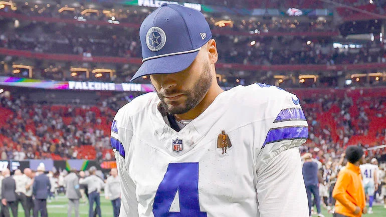

Cowboys Nation
Introduction
The Dallas Cowboys are a storied NFL franchise, but their recent seasons have fallen short of expectations. Despite having a talented roster and dedicated fan base, the team has struggled with consistency in execution, playoff success, and injury management. To improve next season, the Cowboys must focus on strategic adjustments in coaching, roster building, play execution, and mental preparedness. By addressing these areas, the Cowboys can position themselves as true Super Bowl contenders.
This is a box!
Strengthening Coaching Strategies
One of the first areas for improvement is coaching. Head coach Mike McCarthy has been under scrutiny for game management decisions, particularly in crucial moments. Enhancing decision-making during high-pressure situations, like clock management and fourth-down calls, is essential. Additionally, the Cowboys could benefit from better offensive and defensive scheming to maximize their talent. Offensive coordinator Brian Schottenheimer must craft a system that emphasizes both creativity and adaptability, making it harder for opponents to predict plays.
- Mike McCarthy
- Mike Zimmer
- Defense
- Zone
- Man to Man
- Deion Sanders
Bolstering the Offensive Line
A consistent area of concern has been the offensive line. While once a strength, injuries and inconsistent play have weakened its effectiveness. Investing in younger, durable linemen through the draft or free agency could restore dominance in the trenches. The offensive line’s improvement would benefit the run game and give quarterback Dak Prescott the protection he needs to make impactful throws. Maintaining depth at this position is also critical to mitigating injuries throughout the long season.
Refining Dak Prescott’s Role
Dak Prescott remains one of the NFL’s more talented quarterbacks but has faced criticism for turnovers and inconsistent performances. To help Prescott succeed, the Cowboys need to design an offensive system that plays to his strengths while minimizing risks. This could involve more short, high-percentage throws and an emphasis on quick decision-making. Furthermore, the team must focus on improving Prescott’s mental preparation for high-stakes games to ensure he performs his best during the playoffs.

Strengthening the Defensive Unit
While the Cowboys’ defense, led by stars like Micah Parsons and Trevon Diggs, has been a bright spot, there is room for growth. Adding depth at the linebacker and safety positions can make the unit more robust against injuries. Furthermore, emphasizing better tackling techniques and reducing penalties will ensure the defense is not undermined by avoidable mistakes. A more disciplined and cohesive defense could be the backbone of the Cowboys’ playoff push.

Enhancing Team Mentality and Focus
Finally, mental toughness and focus must become a priority. The Cowboys have developed a reputation for falling short in high-pressure moments, such as playoff games. Bringing in sports psychologists or implementing team-building exercises could help players stay composed under pressure. Leadership from veterans and coaches should emphasize accountability, resilience, and a unified purpose. With a stronger mental approach, the Cowboys can overcome the challenges that have plagued them in recent seasons.
Conclusion
The Dallas Cowboys have the talent and resources to contend for a Super Bowl, but success will require comprehensive improvements. By enhancing coaching, strengthening the offensive line, refining Dak Prescott’s role, bolstering the defense, and fostering a resilient team mentality, the Cowboys can rise to the challenge next season. With these changes, Dallas has the potential to reclaim its place among the NFL’s elite teams.

Jump to Top